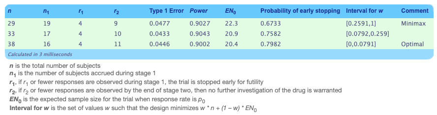

library(tidyverse)
library(ICAOD)Biostat M238 Homework 3
0.1 Problem 2
I’ll assume that the first stage uses \(n_1 = 14\) participants. It follows that our desired \(n_2\) is \[ \begin{align} SE(p) &= \sqrt{\frac{\pi(1-\pi)}{n_1+n_2}}\\ 0.01 &= \sqrt{\frac{0.5^2}{14+n_2}}\\ n_2 &= 2486 \end{align} \] Then, staying in the “worst-case” scenario where p = 0.5, the 95% CI would be \(0.5\pm 1.96*0.01\), which evaluates to \((0.4804, 0.5196)\). Obviously, this is a narrow CI that would be helpful for estimating proportions. However, you need a very large \(n_2\) to achieve this. First, this is likely impractical. Secondly, this raises ethical concerns if the intervention in question is not actually effective or beneficial.
0.2 Problem 3
library(clinfun)
(results <- ph2simon(pu = 0.20, pa = 0.45, ep1 = 0.05, ep2 = 0.1))
Simon 2-stage Phase II design
Unacceptable response rate: 0.2
Desirable response rate: 0.45
Error rates: alpha = 0.05 ; beta = 0.1
r1 n1 r n EN(p0) PET(p0) qLo qHi
Minimax 4 19 9 29 22.27 0.6733 0.259 1.000
Admissible 4 17 10 33 20.87 0.7582 0.079 0.259
Optimal 4 16 11 38 20.44 0.7982 0.000 0.079out_df <- as.data.frame(results$out)I’m implemented the Simon’s optimal and minimax designs since they were introduced in class. Both designs use the same numerical search over all possible two-stage designs that satisfy the desired Type 1 and 2 error rates.
Since these are numerical methods, I used R. If you print the outcome directly, it gives you the minimax and optimal designs. For practice, I searched through all of the results to verify the designs. The following are the interpretations of the outputs.
- Optimal: This design minimizes the expect sample size under H_0.
(optimal <- out_df %>%
filter(`EN(p0)` == min(`EN(p0)`))) r1 n1 r n EN(p0) PET(p0)
1 4 16 11 38 20.4386 0.7982454The results suggest that the trial should only proceed to Stage 2 if at least 5 of the 16 participants respond in Stage 1. At the end of Stage 2, if a total of at least 12 people responded, there is sufficient evidence to reject the null hypothesis. The expected sample size is 20.44 and the early termination probability is 0.7982.
- Minimax: This design minimizes that maximum total sample size.
(minimax <- out_df %>%
filter(n == min(n))) r1 n1 r n EN(p0) PET(p0)
1 4 19 9 29 22.26712 0.6732881The results suggest that the trials should only proceed to stage 2 if at least 5 of the 19 participants respond in Stage 1. At the end of Stage 2, if a total of at least 10 people responded, there is sufficient evidence to reject the null hypothesis. The expected sample size is 22.27 and the early termination probability is 0.6733.
I verified the above results using UNC’s tool for Simon’s two-stage design provided in the lecture notes (screenshot below).

0.3 Problem 5
0.3.1 Cubic design for estimating all parameters
fim_cubic <- function(x, w, param) {
M <- matrix(0, 4, 4)
for (i in seq_along(x)){
fv <- c(1, x[i], x[i]^2, x[i]^3) # basic vector
M <- M + w[i] * outer (fv,fv)
}
return(M)
}
cubic_design <- locally(
fimfunc = fim_cubic,
lx = 0, # lower bound of dose
ux = 1, # upper bound of dose
k = 4, # number of support points
iter = 1000,
inipars = 1, # dummy parameter
ICA.control = list(rseed = 123, trace = F, plot_cost = F)
)
print(cubic_design)
Finding locally optimal designs
Call:
FIM defined directly via the argument 'fimfunc'
iter x1 x2 x3 x4 w1 w2
1 1 6.702729e-02 0.4053769 0.6531818 0.9827003 0.2700213 0.1644451
112 112 1.121467e-09 0.2763958 0.7236071 1.0000000 0.2500186 0.2499947
223 223 6.186495e-15 0.2763932 0.7236068 1.0000000 0.2500000 0.2500000
334 334 6.186495e-15 0.2763932 0.7236068 1.0000000 0.2500000 0.2500000
445 445 6.875823e-15 0.2763932 0.7236068 1.0000000 0.2500000 0.2500000
556 556 6.875823e-15 0.2763932 0.7236068 1.0000000 0.2500000 0.2500000
667 667 6.875823e-15 0.2763932 0.7236068 1.0000000 0.2500000 0.2500000
778 778 6.875823e-15 0.2763932 0.7236068 1.0000000 0.2500000 0.2500000
889 889 6.145777e-16 0.2763932 0.7236068 1.0000000 0.2500000 0.2500000
1000 1000 6.145777e-16 0.2763932 0.7236068 1.0000000 0.2500000 0.2500000
w3 w4 min_cost mean_cost
1 0.3403623 0.2251712 15.20414 15.69393
112 0.2500086 0.2499781 13.59237 13.59247
223 0.2500000 0.2500000 13.59237 13.59237
334 0.2500000 0.2500000 13.59237 13.59237
445 0.2500000 0.2500000 13.59237 13.59237
556 0.2500000 0.2500000 13.59237 13.59237
667 0.2500000 0.2500000 13.59237 13.59237
778 0.2500000 0.2500000 13.59237 13.59237
889 0.2500000 0.2500000 13.59237 13.59237
1000 0.2500000 0.2500000 13.59237 13.59237
Optimal designs (k=4):
Points1 Points2 Points3 Points4
0.00000 0.27639 0.72361 1.00000
Weights1 Weights2 Weights3 Weights4
0.250 0.250 0.250 0.250
ICA iteration: 1000
Criterion value: 13.59237
Total number of function evaluations: 40170
Total number of successful local search moves: 661
Total number of successful revolution moves: 93
Convergence: Maximum_Iteration
Total number of successful assimilation moves: 2446
CPU time: 1.814 seconds!plot(cubic_design) 
Maximum of the sensitivity function is 3
Efficiency lower bound (ELB) is 0.25
Verification required 0.041 seconds! 0.3.2 Fractional polynomial design for all 4 parameters
fim_frac <- function(x, w, param) {
M <- matrix(0, 4, 4)
for (i in seq_along(x)) {
fv <- c(1, sqrt(x[i]), x[i]^2, x[i]^3) # basis vector
M <- M + w[i] * outer(fv, fv)
}
M
}
frac_design <- locally(
fimfunc = fim_frac,
lx = 1e-06, # lower bound set equal to small positive number to deal with sqrt
ux = 1, # upper bound
k = 4, # number of parameters
iter = 1000,
inipars = 1, # dummy parameter
ICA.control = list(rseed = 123, trace = FALSE, plot_cost = F)
)
print(frac_design)
Finding locally optimal designs
Call:
FIM defined directly via the argument 'fimfunc'
iter x1 x2 x3 x4 w1 w2
1 1 0.02609993 0.1128726 0.5541067 0.9789192 0.1127260 0.2736188
112 112 0.00000100 0.2087767 0.6984816 1.0000000 0.2500021 0.2500035
223 223 0.00000100 0.2087671 0.6984860 1.0000000 0.2500000 0.2500000
334 334 0.00000100 0.2087671 0.6984860 1.0000000 0.2500000 0.2500000
445 445 0.00000100 0.2087671 0.6984860 1.0000000 0.2500000 0.2500000
556 556 0.00000100 0.2087671 0.6984860 1.0000000 0.2500000 0.2500000
667 667 0.00000100 0.2087671 0.6984860 1.0000000 0.2500000 0.2500000
778 778 0.00000100 0.2087671 0.6984860 1.0000000 0.2500000 0.2500000
889 889 0.00000100 0.2087671 0.6984860 1.0000000 0.2500000 0.2500000
1000 1000 0.00000100 0.2087671 0.6984860 1.0000000 0.2500000 0.2500000
w3 w4 min_cost mean_cost
1 0.3926905 0.2209647 14.04340 14.96517
112 0.2499975 0.2499969 11.59005 11.59007
223 0.2500000 0.2500000 11.59005 11.59005
334 0.2500000 0.2500000 11.59005 11.59005
445 0.2500000 0.2500000 11.59005 11.59005
556 0.2500000 0.2500000 11.59005 11.59005
667 0.2500000 0.2500000 11.59005 11.59005
778 0.2500000 0.2500000 11.59005 11.59005
889 0.2500000 0.2500000 11.59005 11.59005
1000 0.2500000 0.2500000 11.59005 11.59005
Optimal designs (k=4):
Points1 Points2 Points3 Points4
0.00000 0.20877 0.69849 1.00000
Weights1 Weights2 Weights3 Weights4
0.250 0.250 0.250 0.250
ICA iteration: 1000
Criterion value: 11.59005
Total number of function evaluations: 41428
Total number of successful local search moves: 829
Total number of successful revolution moves: 113
Convergence: Maximum_Iteration
Total number of successful assimilation moves: 2601
CPU time: 1.927 seconds!plot(frac_design)
Maximum of the sensitivity function is 3
Efficiency lower bound (ELB) is 0.25
Verification required 0.036 seconds!